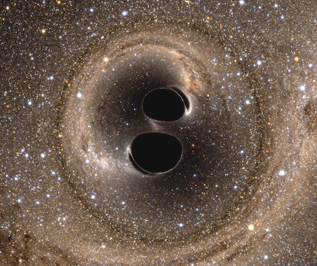

Direct detection of gravitational waves by the LIGO project is one of the signal scientific accomplishments of the century. And I'll tell you why it's awesome.
Astronomy has traditionally been all about light from the stars -- we do not use our ears or noses to find out about galaxies. Telescopes allowed huge steps: Galileo seeing the moons of Jupiter, Hubble understanding that our vast Milky Way galaxy is just a dot in a huge Universe, the images of Pluto from 2015 showing complexity even in the great cold. When I say light, I mean the whole spectrum of light, much of which our eyes cannot see, including radio, X-rays, and infrared, that can show us so much more than just optical wavelengths. Recently astronomy has flourished by adding computers to all that light. For example, computers are much faster than people are at finding differences between images of the sky from different times, exposing transient sources such as supernovas and comets. Launching satellites into space lets us get the light without the intervening atmosphere. The old picture had the "fixed stars" with exactly seven wandering planets; from modern astronomy we now know the Universe to be a very violent place full of movement and explosions.
Gravitational waves offer a new way to understand the distant Universe, like a new sense, in addition to our eyes and telescopes. Like all waves, gravitational waves have a frequency -- the rate at which the wave goes up and down -- measured in cycles per second, and abbreviated as "Hz". It's the same language as music, where A is 440 Hz. Indeed the analogy goes further: the frequency band for which LIGO is optimized is just about the same as the frequencies that the human ear can hear. Thus it is simple to convert the LIGO signals into an audio feed, with the detector in Louisiana through one ear and the detector in Washington State through the other ear. Sounds like a lot of noise, mostly, and LIGO has recorded years of it. The computers work hard to find signal in all the noise. When two black holes coalesce into a single entity, their last furious orbits happen at hundreds of cycles per second, generating the signals measured by LIGO. Faster and faster the orbit goes, until each collapses into the other in a great burst of energy, the combined black hole spinning and shivering in a "ring-down" like a sustained note of a piano. When converted to audio, the signal is a chirp, rising in frequency, sounding a bit like a bird call. Here is a link to the sound of the detection data, and here is a link to the best-fit waveform.
The analogy with sound carries further, because now, in 2016, we only have two gravitational wave detectors, just as we only have two ears. Humans have a sense of direction based on where the sound came from -- which is actually a measurement in the brain of the time difference between the left and right ears. If a signal comes first to the left ear and a millisecond later to the right ear, we instinctively look to left so our eyes can try to see where the sound came from. LIGO does the same with computers and telescopes; by comparing widely separated detections, a map of the sky can be made showing where to look for the elusive counterpart of the gravitational wave source. Because of modern computers and communications, telescopes all over the world can be turned to that probable area to look for transient sources, just as our two ears hear sound waves and we turn our eyes to find it precisely with light. While there are now only two detectors, a third will start observing in 2016: the Italian-French-Dutch Virgo detector, located near Pisa, Italy. A Japanese detector is coming, and possibly another one in India. If all of these are observing, the sky localization will be much better, and it should be possible to see if there is any light coming from a gravitational wave event.
Einstein is of course the hero for everyone in LIGO. By pure thought he revolutionized physics. Suppose, he pondered, light always travels at the same speed. Suppose, he thought, gravity is not simply a force between two masses, but rather the mass bends the space and that bending is what makes the other mass move. By following through these deep insights, he came up with a grand theory of gravity that almost precisely replicated the old Newtonian theory -- that predicted the solar system with incredible accuracy. But for large masses and high speeds, Einstein's theory was different, and contained many strange predictions for the strong regime. Einstein himself was convinced of its truth when his new theory exactly accounted for irregularities in the orbit of Mercury. These differences from the Newtonian orbit had been known for decades, and launched many searches and false discoveries of an imaginary planet called Vulcan, closer to the Sun and supposedly perturbing Mercury, causing the differences. The rest of the world became Einstein fans after a second proof, when it was shown, during a solar eclipse in 1919, that starlight is bent by the gravity of the Sun.
The more bizarre predictions came to be believed, during the 1970s and 80s, including existence of "black holes", where space-time is bent to an infinite degree. Gravitational waves were also predicted by Einstein; the idea that space itself can be jiggled like jello, and everything in that space jiggles with it -- think suspended fruit. Gravitational waves, unlike jello waves, travel through space at the speed of light. In the 1990s, observations of an exotic star system showed energy loss consistent with gravitational radiation, but until now there has been no direct detection here on Earth.
We all know one of Einstein's equations, E=mc2, meaning energy = mass multiplied by c2 (speed of light squared), showing that mass can be converted to energy. The multiplier, the square of the speed of light, is very very large: a single gram of mass, the weight of a paperclip, converts to as much energy as was released from the Hiroshima atomic bomb. Another Einstein formula, less famous, tells how much bending of space is caused by mass: curvature = mass divided by c2. Here the very large number is going in the opposite direction, so that huge amounts of mass must be concentrated to get appreciable curvature, and that mass must move at huge speeds to generate gravitational waves, such as when two black holes get very very close and dance cheek to cheek.
So we are not just talking a black hole, but of two of them getting together. Two black holes joining into one is the most energetic kind of event in the Universe, and yet the theory says no light is produced! There is no "matter" there at all, no dust or rocks or atoms or anything, because the black holes have been spiraling in for millions of years, and have either eaten or thrown off any surrounding matter. Without matter there can be no light or heat, and what is left is just the singular-infinite curvatures of the black holes. That is the theory -- but of course the astronomers want to look because if there is an optical counterpart, it would smash the theory and thus be very exciting. The energy release from an event like this is truly titanic -- a million times the light and heat from a supernova -- and yet invisible to our eyes, except by distorting the positions of background stars (see picture below).
I should make it clear that there are basically two kinds of black holes: stellar-mass and galaxy-mass, the former being from one to a hundred solar masses, and the latter in the range of a million to a billion solar masses. The stellar-mass black holes and their collisions are accessible to LIGO, with their chirps in the hundreds of Hz, however each galaxy-mass black hole influences an entire galaxy of billions of stars. Other experiments are trying to find gravitational waves from pairs of these 'supermassive' black holes, using radio astronomy or space-based lasers (LISA).
I joined LIGO in 1997, working at Caltech in Pasadena. The technologies -- using lasers and mirrors to detect gravitational waves -- were already 20 years old. Much of the development was with a prototype on the Caltech campus, a 1/100 scale model of the eventual LIGO. The US Government chose to fund the big effort, and by then the two observatories were built, each an L-shape with arms four kilometers long. The push when I arrived was to empty the long beam-tubes of all air, to make the world's largest high-vacuum system. There is so much high technology in the LIGO project. The tiny, tiny signal must be detected without being swamped by noise. We are measuring a length change that is vanishingly small: 1/1000 the size of a proton. LIGO has spun off techniques to make very stable and high-power lasers, very smooth mirrors and special coatings, suspensions to isolate and reduce noise by factors of billions, even quantum manipulation of photons to reduce noise. There are two detectors: Hanford, in the desert of eastern Washington and Livingston, in the bayous of Louisiana. You can see them both in Google Maps. As noted above, the time difference gives a clue about the location of the gravitational wave source in the sky; but more important is that any astrophysical signal will happen at both detectors, whereas almost all the noise effects are independent and uncorrelated between the two, thus boosting the signal relative to the noise. Another essential component is software -- first to simulate the complex black-hole motions to find the precise waveforms that are expected, and then to efficiently detect these waveforms if they are in the detector data.
It has been a strange place to work. People are driven by faith -- faith that eventually LIGO would detect something. Some people have been working on LIGO for 30 or even 40 years, always knowing that it might end up as a complete dud! Great structures of theory provided estimates of the rates of measurable events, estimates that had massive uncertainties -- there might be a hundred events, or there might be just a small chance of a single event. If Nature were unkind to us, we imagined just one stingy, dubious detection in years of running, and destructive squabbling amongst the collaborators about whether to publish. There were early attempts to detect gravitational waves, with false claims of detection, resulting in a contrasting culture of great care and deliberation fifty years later. Of course everyone's heart goes pitter-pat at the thought of a real detection, and so it is especially important that we only find what is there, not what we want to be there. LIGO has elaborate protocols to ensure this.
But Nature was kind to LIGO, and gave us gold as soon as Advanced LIGO began operation in September 2015.
The coalescence of two black holes that was detected was an event of unimaginable power. One was 36 solar masses, the other 29, and it was over a billion light years away. If the gravitational wave power were converted to light, it would outshine the entire Universe! That light, seen from Earth at a billion light-years, would have outshone the full moon -- the moon that is less than a light-second from us. Just as the atomic bomb energy is the result of converting mass the size of a paperclip to pure energy, the LIGO event converted three times the mass of the Sun to energy! Ten-to-the-33 atomic bombs! And yet that energy is not in the form of light but gravitational waves, making it much more difficult to detect. It took the immense technological achievement that is LIGO, with hundreds of people over decades, to detect and identify this vast energy.
Imagine that our Sun went supernova, a type of huge explosion of a star, where ten billion years of solar output happens all at once (but don't worry, the Sun will not really go supernova). At a distance of eight light-minutes the Earth would survive, but blasted to a crisp, all air and water gone, death to all. However, if we are eight light-minutes from the coalescence of black holes, it is quite different; even though there is 100 to 1000 times the energy release of the supernova, the outgoing gravitational waves would have much less effect, more like standing in front of a loudspeaker at a rock concert when the drummer hits hard. Actually the supernova is also putting most of its energy into something we cannot feel -- neutrinos, the ghost-like particles that go right through the Earth without stopping. But it also puts out a tiny bit of its energy as light and heat, and that is what we do feel, that is what blows us away. So the supernova neutrinos carry a thousand times the energy of the light -- and the energy of the LIGO event is a thousand times that! These huge, invisible energy releases somehow remind me of when two people have a secret love affair -- so much emotional energy but invisible to the outside world.
This detection is not just checking a box on the last unverified prediction of Einstein, it is not just a titanic explosion as big as a thousand supernovas, it is not just incredible technology, but also a new window on how the Universe works. Black holes can spin, and there is information in the direction of those spins, as well as the orbital spin of the binary system. Multiple detections by LIGO will yield the origin story of black holes, and how black holes evolve and merge to make the supermassive black holes that are in the centers of galaxies, and how our own solar system, our own experience, is influenced and shaped by a population of black holes in the Universe, as yet hardly explored.
The LIGO project is, like all big science, an international collaboration, including major contributions from Britain, Germany, Australia, and India. But most of the cost came from the taxpayers of the United States, through the National Science Foundation, proving US accomplishment and collaboration in yet another area of high technology. It is refreshing to see Government funding devoted to this high-risk, long-term search, that has inspired a generation of our best and brightest, of all genders and races, to give their best, build advanced technology, and create the future. This is a search that has yielded totally awesome science and makes the United States shine.
Official information from LIGO here and here.
Here are more blogs from other members of the LIGO Scientific Colloaboration
{kind=link}